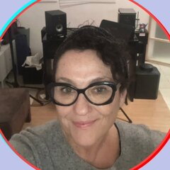
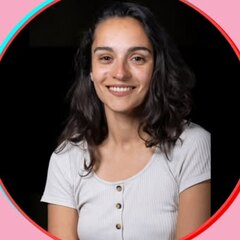
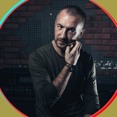
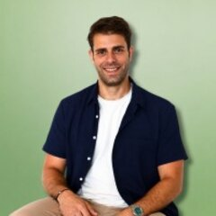
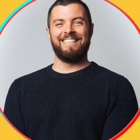
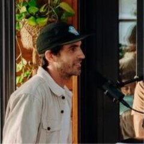

PodOuest
Les Rencontres Podcast et Son du Sud-Ouest. Une journée pour que les professionnel·les du son de la région se rencontrent enfin, pour de vrai.
Des podcasts, il y en a. Des journalistes, autrices, compositeurs, technicien·nes du son et studios qui les font vivre aussi. Mais se connaissent-ils ? Se rencontrent-ils ? Travaillent-ils ensemble ?
PodOuest existe pour créer cet espace : que les professionnel·les du podcast et du son du Sud-Ouest se rencontrent, partagent leurs pratiques et fassent circuler les projets. Pas un réseau de plus — celui qui est déjà là, rendu visible.
Le programme de la journée
Huit tables rondes et ateliers, de la voix au territoire. Un déjeuner local, une exposition sonore et des temps pour se rencontrer entre les sessions.
Les horaires précis de chaque atelier sont détaillés sur la billetterie HelloAsso.
Les intervenant·es
Photos et liens issus des publications de PodOuest et des profils publics des intervenant·es.
-

-

Maud CalvèsJournaliste, créatrice de podcasts et formatrice · Autochtone Studio -
Aurélia CimelièrePodcasteuse, pro de l’édito · Encrage[s] Podcast, Biarritz. Cofondatrice de PodOuest
-

-

-

-

Pour qui
Une journée pensée pour celles et ceux qui font vivre le son en Sud-Ouest, quel que soit leur stade.
Vous portez un podcast
De l'idée éditoriale au modèle économique, en solo ou en studio — trouvez votre ligne et votre public.
Vous travaillez le son
Compositeurs, designers sonores, monteur·euses : venez rencontrer les podcasteur·euses qui cherchent votre œil.
Vous racontez des histoires
Interview, écriture, voix — affinez votre pratique aux côtés d'autres professionnel·les du récit sonore.
Vendredi 2 octobre, à Anglet
La Générale (association UrFU, tiers-lieu de santé), Anglet, Pays Basque. Voir l'itinéraire ↗
- DateVendredi 2 octobre 2026
- Horaires9h – 17h
- LieuLa Générale, Anglet
- Contactpodouest@gmail.com
Billetterie et tarifs sur HelloAsso, plateforme officielle de l'association.